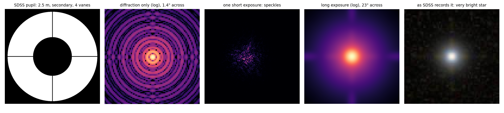
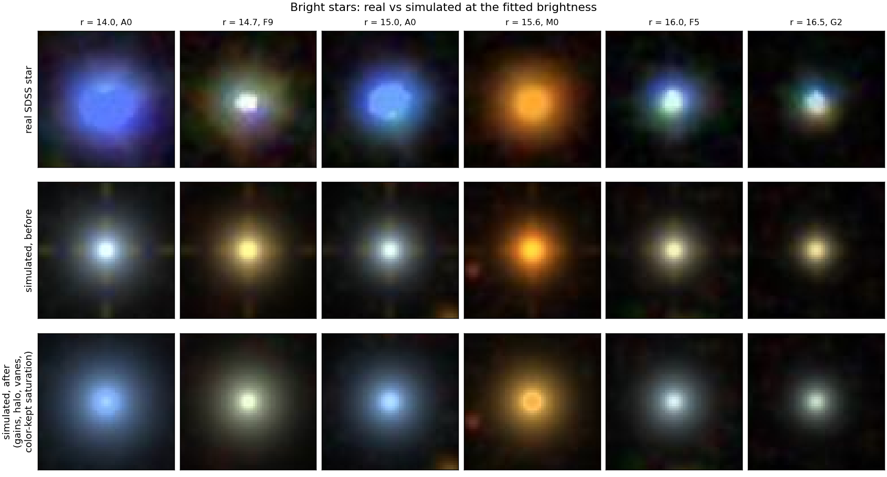
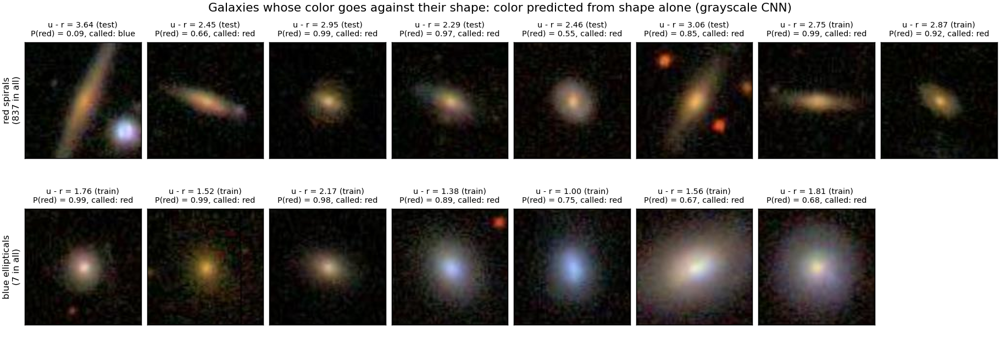
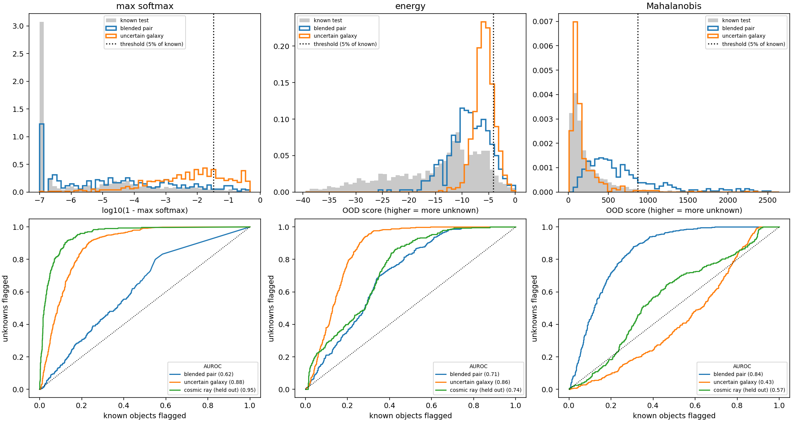
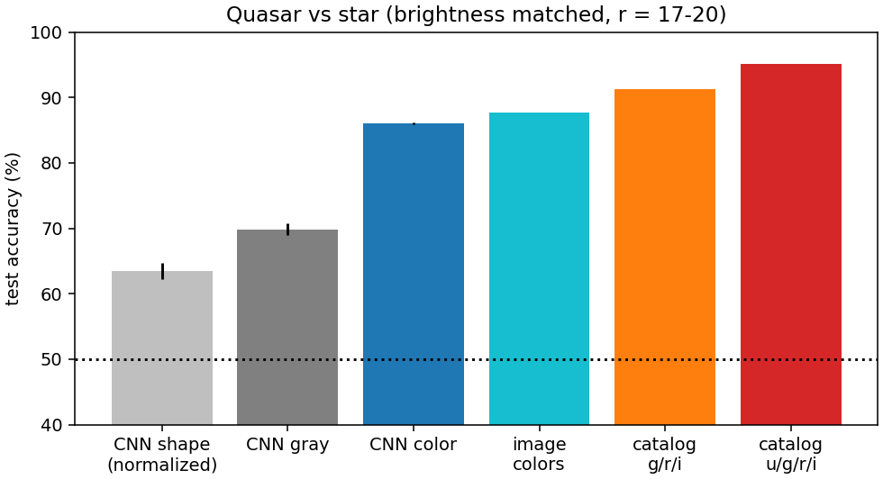

What must a simulated sky contain?
The classifier's stars and artifacts are simulated, but the sky it has to work on is real. Every improvement so far came from making the simulation more like the telescope, and each one was forced by a specific failure.
The gap to close
The 13 points between simulated and real training measure what the simulation is still missing. On real SDSS fields there is a second gap. The network calls catalog stars "star" 97–100% of the time, but it calls only 42%, 4% and 1% of catalog galaxies "galaxy" at r = 18–19, 19–20 and 20–21. Its training galaxies are all large and bright, so to the network "small and faint" means "star."

Building the telescope, one failure at a time
Each card is an ingredient of the forward model and the failure, or the check, that put it there.


What the networks learned along the way
Shape carries color: red spirals are edge-on
step 4




Real fields

Coming
A removal test for every forward-model ingredient; faint galaxies made by artificially redshifting bright ones until they become dots, the missing ingredient behind the 1%; and an anomaly hunt for the strangest objects in the real sky.